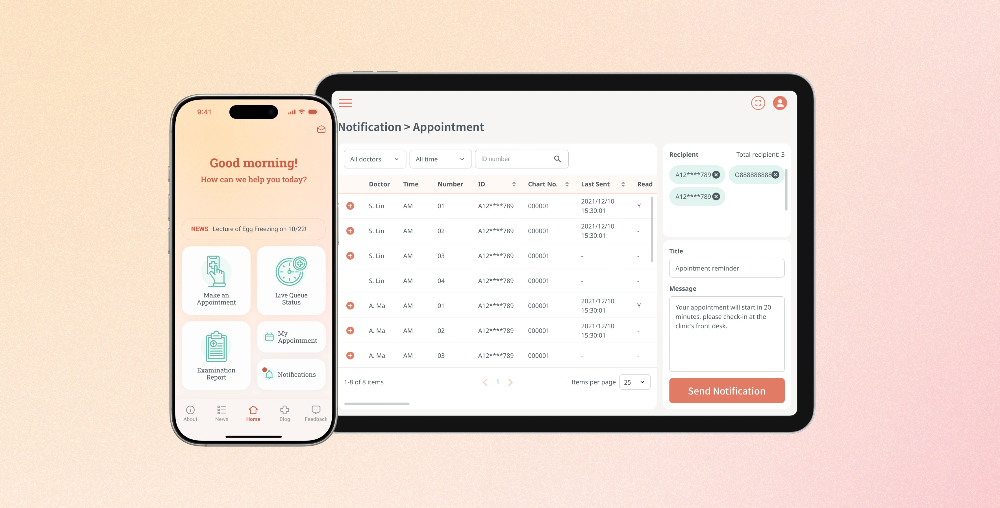
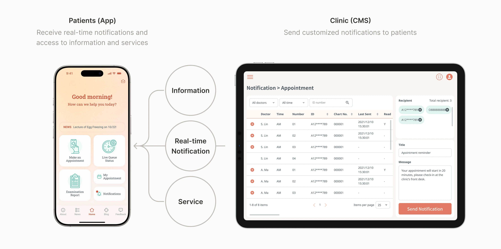
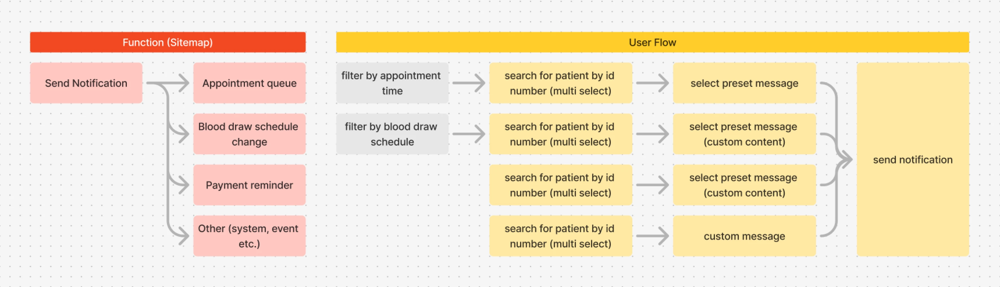
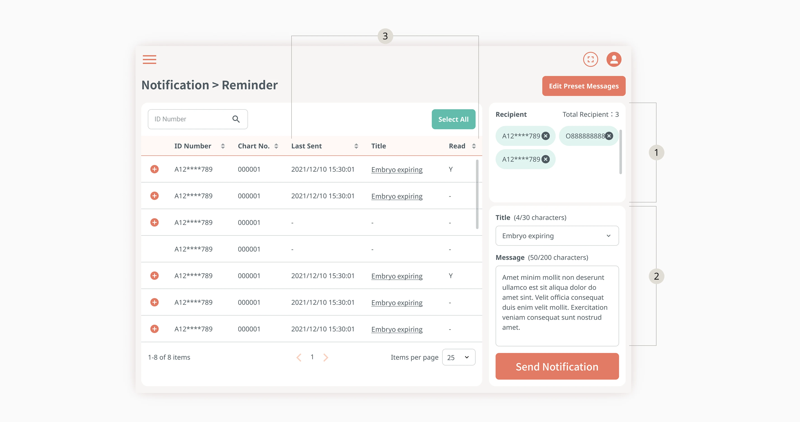
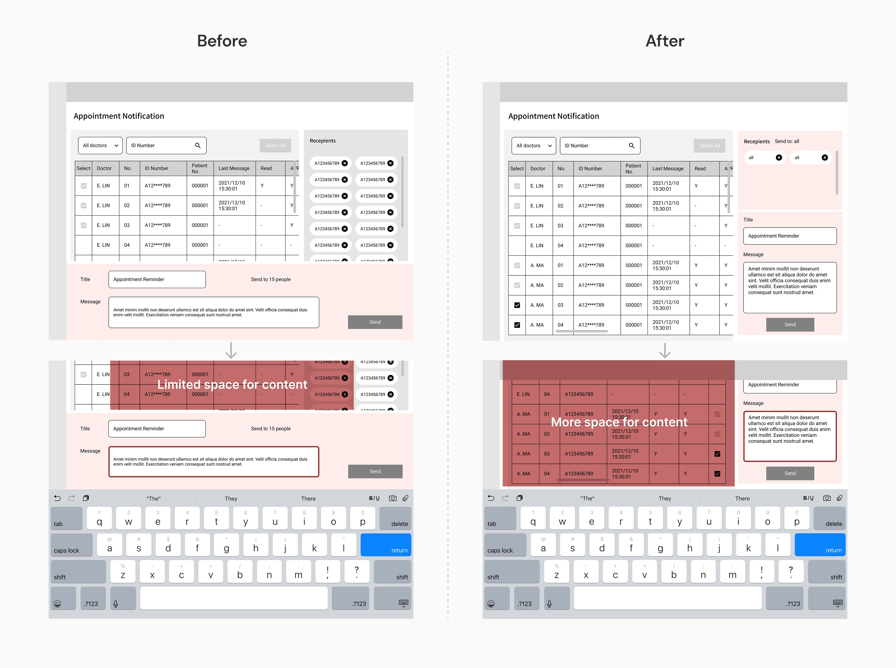
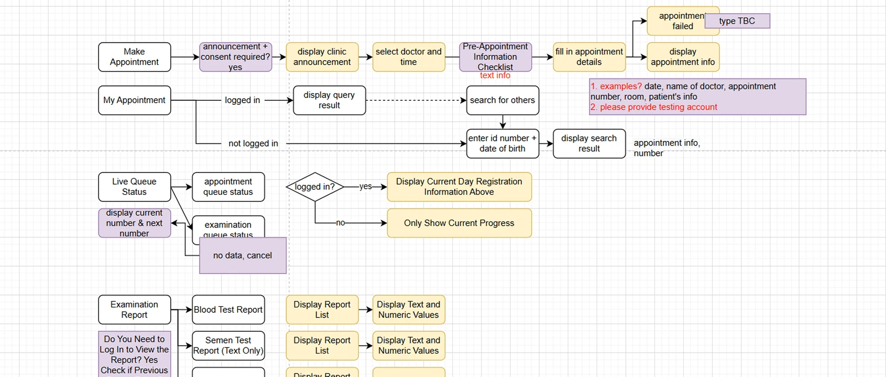
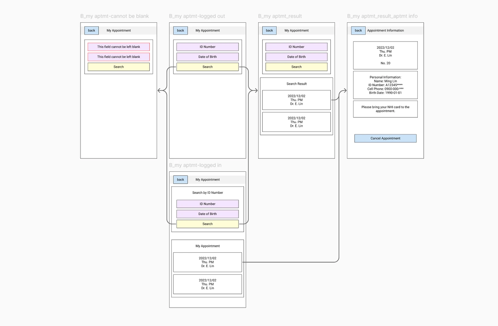

Fertility Center App+CMS
Streamlining notification process for clinic staff and providing patients easy access to information and services

Project
Custom product design project for a confidential client of Spark Technologies Inc.
My Contribution
Product Design
UX Design
Design System
Team
1 Project Manager
1 Frontend Developer
1 Backend Developer
2 App Developers
Timeline
Nov – Dec 2021 (6 weeks)
Project Goal:
Improving patient outreach and information access
Our client was a fertility center supporting infertile parents. They aimed to improve communication with patients, who were contacted manually for appointment updates, payment reminders, and schedule changes. To streamline communication and provide easy access to information, the project aimed to develop a mobile app and its content management system (CMS) for real-time, transparent interactions between the clinic and patients.
Clinic Staff: Need to notify patients more efficiently.
Patients: Need easy access to various types of information.
Design Overview:
Streamlining notification process and provide easy access to information and services
The CMS design streamlined notifications for clinic staff, while the mobile app provided patients with easy access to information and services, enhancing communication and efficiency at the fertility center. In this project, I designed a mobile app and the CMS end-to-end. I interviewed the stakeholders in the clinic, defined information architecture, and led the design of the whole system, including the design system and guideline.

CMS Design:
How might we send notifications for different scenarios efficiently?
User Archetype:
The Busy Clinic Staff
The clinic staff had to make individual phone calls to notify each patient in various situations, which was very time-consuming. To streamline this process, we decided to enable them to send preset notifications directly through the CMS.
User Research:
Identifying the Common Scenarios for Sending Notifications
Through stakeholder interview, we identified several scenarios that the staff need to manually notify the patients:
1. Appointment Management
Appointment order often deviates from registration numbers due to unforeseen circumstances. This leads to inaccurate wait time estimates for patients and requires staff to manually call each patient when it's their turn.
2. Payment Reminder
Some patients would forget to pay their annual embryo preservation fee, and the clinic staff need to remind them manually.
3. Blood Draw Schedule Changes
Sometimes, the clinic needs to change the blood draw schedule due to unforeseen circumstances.
4. Other
The clinic occasionally needs to notify patients about temporary changes in hours, special events, or other matters. These notifications are irregular and their content varies each time.
Design Solution:
Reducing the Staff's Effort in Notifying Patients
After identifying common scenarios for sending notifications, I mapped out user flows for each to find patterns and spot differences. I learned that filtering recipients was key to efficiency, and using preset messages could save time on typing.

Task analysis for each scenario
Quick Switch Between Each Scenario
Instead of manually filter recipients from the full patient list each time, I put quick links for each common scenarios in the side menu to streamline the process.
Notification Management
Clinic staff can send notifications by selecting recipients, choosing a preset message or typing a custom one, then clicking the "Send Notification" button. They can also view the notification history, check if recipients have read them, and filter unread notifications for easy resending.

Design Iteration:
Optimizing User Experience on Tablets
From the stakeholder interview, we learned that staff use tablets to manage online services, so we needed to ensure the onscreen keyboard wouldn't block critical content.
During wireframing, I experimented with different layouts to maximize visible content when the keyboard appeared. Initially, the message area was fixed at the bottom of the page, which obscured the receiver list while typing. After several iterations, I moved both the receiver list and message area to the right sidebar, allowing more information to remain visible.

App Design:
How might we provide patients with easy access to various types of information and services?
User Archetype:
Patients who Need Access to Various Types of Information and Services
Clinic patients need timely information, easy appointment booking, and access to their medical data. However, these functions are often scattered across websites, messaging apps, and phone calls, forcing patients to switch between platforms and making even simple tasks inefficient and frustrating.
Design Solution:
Clear & Intuitive Access to Different Information
Making Appointments
Users can make appointments through the app. If they make appointments through phone or the clinic's website, their appointment information would also be displayed in the app.
Appointment Management
Users can check the information of their appointments or cancel appointments through the app. Before going to the appointment, they can also track the real-time queue status.
Clinic Information
Users can find the information about clinic locations, doctors, and visiting hours.
News & Announcements
Users can be updated with the latest news and announcements of the fertility center on the app.
Examination Report
Users can access to their examination report through the app.
Notification List
Users can read the messages in the notification list.
Design Approach:
Aligning Features with User Needs Through Visual Communication
Structuring Features Around User Needs
To clearly understand user needs and priorities, I created a functional map to outline essential features and analyze tasks. This diagram facilitated discussions with the project manager about key functions, content, and data sources early in the process.

Visualizing User Flows for Cross-team Alignment
Next, I developed a simple UI flow to clarify user journeys and content mapping. The flowchart helped verify content with the client, while the project manager used it to discuss data sources with the app developers.
